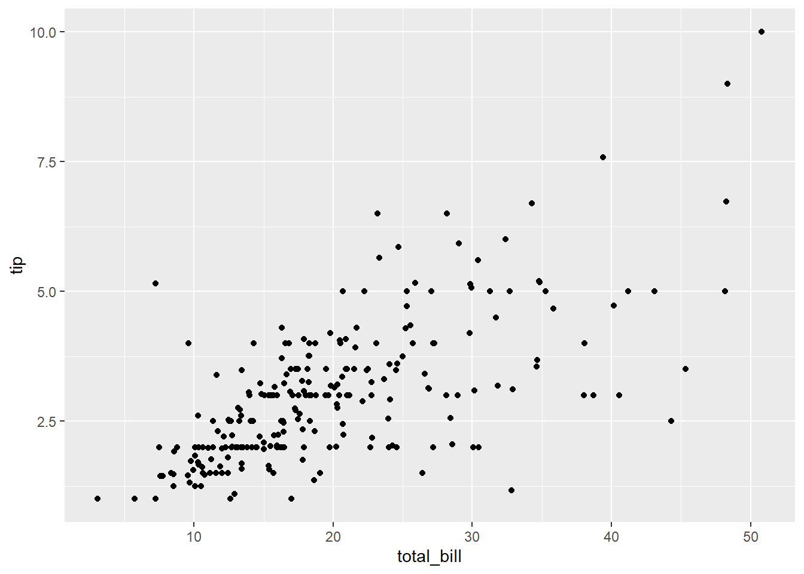
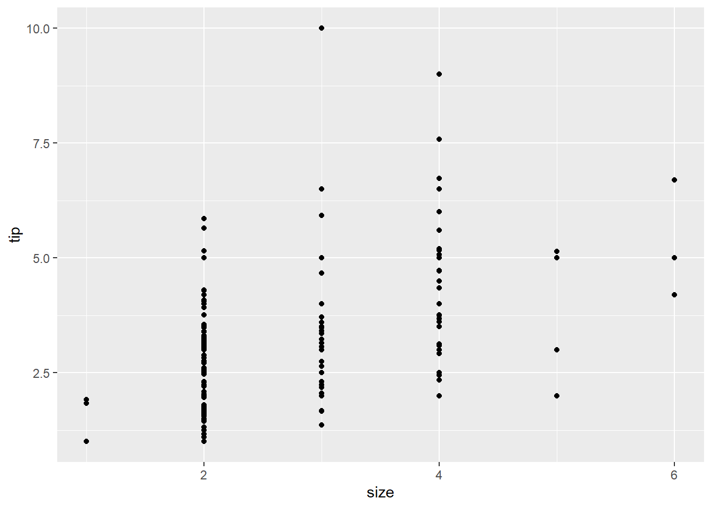
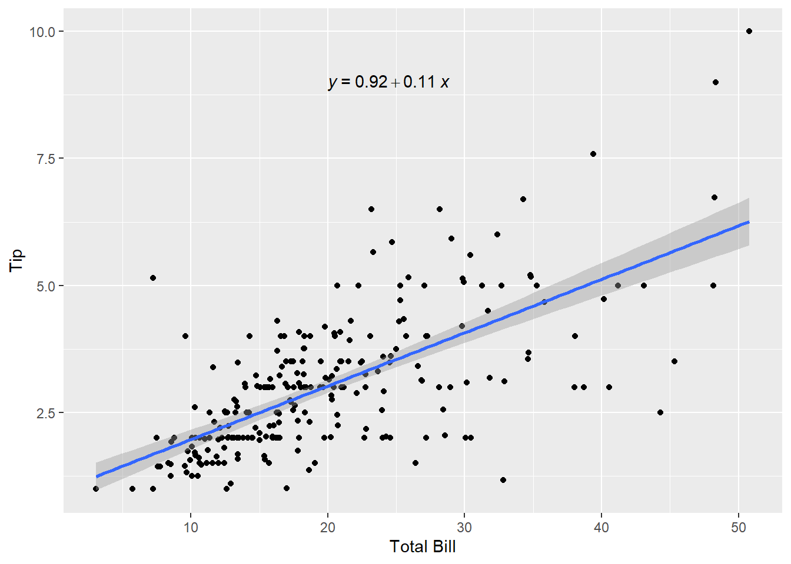
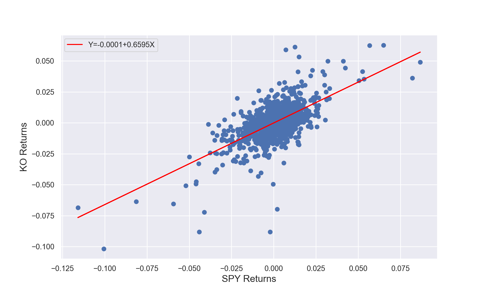
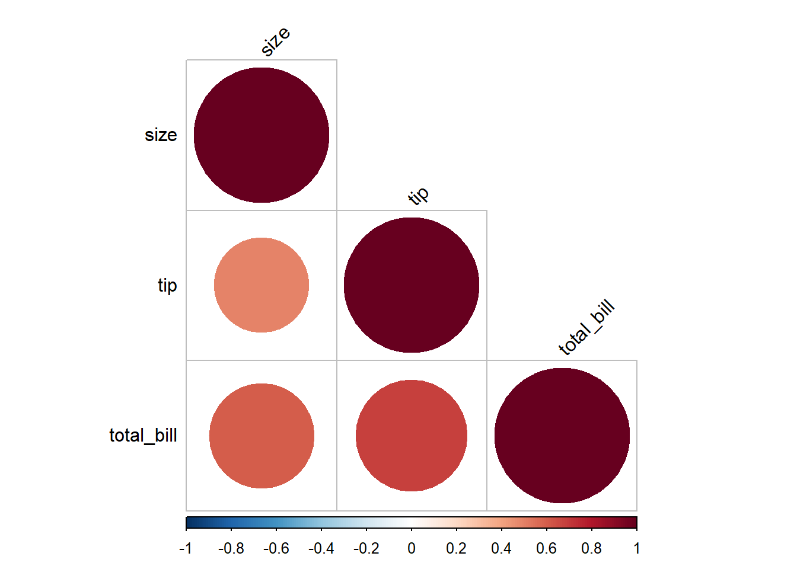

# loading necessary packages
library(tidyverse)7 Predictive Modeling - Linear Regression
Learning Objectives of the Chapter
At the End of the Chapter, Students should be Able to -
Learn about Linear Regression
Identify Linear Relation between Variables
Build Linear Regression Model between Variables
Learn about How to Evaluate the Fitness of Linear Models
Evaluate the Assumptions of Linear Regressions
Build Multiple Regression Models and Evaluate them
7.1 Introduction
Discussion on predictive analytics.
7.2 Regression Analysis
7.2.1 Simple Linear Regression
Regression analysis is one of very useful predictive modeling techniques that identify the relationship between two or more variables. The objective of linear regression is to identify a linear line of best fit that can predict the outcome variable (target variable/dependent variable/response variable) for one or more independent variables(predictors). For example, we can draw a scatter diagram to see the relation between horsepower and miles per gallon (MPG). Figure fig-r-hrspower-mpg and Figure fig-py-hrspower-mpg show the relationship between horsepower and MPG in R and Python respectively. It is clear that there exists a negative relationship between horsepower and MPG and it makes sense because more power means higher fuel consumption. Similarly, there is negative relationship between vehicle weight and MPG because heavier vehicles need more energy to move (Figure fig-r-weight-mpg and Figure fig-py-weight-mpg). The equation of a simple linear regression is - \[y= mX + C\]
where \(y\) = Target variable (Dependent variable); \(m\) = slope or rate of change; \(X\) = predictor or independent variable; and \(C\) = intercept or constant.
# loading the dataset
r_df = read_csv('http://web.pdx.edu/~gerbing/data/cars.csv')
glimpse (r_df)Rows: 392
Columns: 9
$ Model <chr> "amc ambassador dpl", "amc gremlin", "amc hornet", "amc …
$ MPG <dbl> 15, 21, 18, 16, 14, 15, 18, 14, 15, 10, 15, 11, 10, 15, …
$ Cylinders <dbl> 8, 6, 6, 8, 8, 8, 8, 8, 8, 8, 8, 8, 8, 8, 6, 8, 8, 8, 6,…
$ `Engine Disp` <dbl> 390, 199, 199, 304, 455, 350, 307, 454, 400, 307, 383, 3…
$ Horsepower <dbl> 190, 90, 97, 150, 225, 165, 130, 220, 150, 200, 170, 210…
$ Weight <dbl> 3850, 2648, 2774, 3433, 3086, 3693, 3504, 4354, 3761, 43…
$ Accelerate <dbl> 8.5, 15.0, 15.5, 12.0, 10.0, 11.5, 12.0, 9.0, 9.5, 15.0,…
$ Year <dbl> 70, 70, 70, 70, 70, 70, 70, 70, 70, 70, 70, 70, 70, 70, …
$ Origin <chr> "American", "American", "American", "American", "America…# loading necessary modules
import pandas as pd
import seaborn as sns
import matplotlib.pyplot as plt # loading the dataset
py_df = pd.read_csv("http://web.pdx.edu/~gerbing/data/cars.csv")
py_df.info()<class 'pandas.core.frame.DataFrame'>
RangeIndex: 392 entries, 0 to 391
Data columns (total 9 columns):
# Column Non-Null Count Dtype
--- ------ -------------- -----
0 Model 392 non-null object
1 MPG 392 non-null float64
2 Cylinders 392 non-null int64
3 Engine Disp 392 non-null float64
4 Horsepower 392 non-null int64
5 Weight 392 non-null int64
6 Accelerate 392 non-null float64
7 Year 392 non-null int64
8 Origin 392 non-null object
dtypes: float64(3), int64(4), object(2)
memory usage: 27.7+ KBggplot(r_df, aes(x = Horsepower, y = MPG))+
geom_point()

sns.set_theme(style="darkgrid")
sns.scatterplot(x = "Horsepower", y = "MPG", data = py_df)ggplot(r_df, aes(x = Weight, y = MPG))+
geom_point()

sns.set_theme(style="darkgrid")
sns.scatterplot(x = "Weight", y = "MPG", data = py_df)
Now we can quantify these relationships using linear regression in which we will try to draw a line that will help us to idenfity the relation between the variables. For example, in Figure fig-r-reg-equation, we can see the linear line that shows the relation between horsepower and MPG. The regression equation we find is y = 40-0.16x, where \(y\) is MPG, \(x\) is Horsepower, \(40\) is intercept, and \(1.6\) is slope, which means one unit change of Horsepower results in 1.6 units reduction of MPG and the value of MPG is 40 when horsepower is 0. Figure fig-py-reg-equation shows the same results.
library(ggpubr)
ggplot(r_df, aes (x = Horsepower, y = MPG))+
geom_point()+
geom_smooth(method = "lm")+
stat_regline_equation(label.x = 125, label.y = 40) # to add reg equation

import plotnine as p9
from scipy import stats
#calculate best fit line
slope, intercept, r_value, p_value, std_err = stats.linregress(py_df['Horsepower'],py_df['MPG'])
py_df['fit']=py_df.Horsepower*slope+intercept
#format text
txt= 'y = {:.4f} x + {:.4f}'.format(round(slope,2), round(intercept,2))
#create plot.
plot=(p9.ggplot(data=py_df, mapping= p9.aes('Horsepower','MPG'))
+ p9.geom_point(p9.aes())
+ p9.xlab('Horsepower')+ p9.ylab(r'MPG')
+ p9.geom_line(p9.aes(x='Horsepower', y='fit'), color='blue')
+ p9.annotate('text', x= 150, y = 40, label = txt))
# print the plot
print(plot)7.2.1.1 Relationship between Stock Returns and a Market Index
Now we will try to build a simple linear model between the return of a stock and a market index. Using tidyquant package from R or yfinance module from python, we will get share prices of different stocks and a market index. For example, we will get the share price data of Coca-Cola (NYSE:KO) and its competitor PepsiCO (NYSE:PEP). Moreover, we will collect data on US Dollar index (ICE:DX) and SPDR S&P500 ETF (NYSERCA:SPY).
library(tidyquant)
tickers = c("KO", "SPY", "PEP","DX-Y.NYB")
prices <- tq_get(tickers,
from = "2019-01-01",
to = "2023-12-31"
#,get = "stock.prices"
)
df_stockR = prices |>
select(symbol, date, adjusted) |>
drop_na(adjusted) |>
pivot_wider(id_cols = date,names_from = symbol,
values_from = adjusted)
df_stockR = as_tibble(na.omit(CalculateReturns(df_stockR, method = "log")))
# Linear Regression
library(fixest)
# feols(KO ~ SPY, data = df_stockR)
summary(lm(KO ~ SPY, data = df_stockR))
Call:
lm(formula = KO ~ SPY, data = df_stockR)
Residuals:
Min 1Q Median 3Q Max
-0.086587 -0.005092 0.000230 0.005503 0.054322
Coefficients:
Estimate Std. Error t value Pr(>|t|)
(Intercept) -7.427e-05 2.920e-04 -0.254 0.799
SPY 6.595e-01 2.198e-02 30.009 <2e-16 ***
---
Signif. codes: 0 '***' 0.001 '**' 0.01 '*' 0.05 '.' 0.1 ' ' 1
Residual standard error: 0.01034 on 1255 degrees of freedom
Multiple R-squared: 0.4178, Adjusted R-squared: 0.4173
F-statistic: 900.5 on 1 and 1255 DF, p-value: < 2.2e-16model = lm(KO ~ SPY, data = df_stockR)
# adding fitted value to the dataset
df_stockR$fitted = fitted(model)
# adding residual to the dataset
df_stockR$residual = resid(model)
# We can use broom package to simplify all of these processes
library(broom)
df_stockR2 = df_stockR |>
select(KO:DX.Y.NYB)
model2 = lm(KO ~ SPY, data = df_stockR2)
tidy(model2) # summary of model components # A tibble: 2 × 5
term estimate std.error statistic p.value
<chr> <dbl> <dbl> <dbl> <dbl>
1 (Intercept) -0.0000743 0.000292 -0.254 7.99e- 1
2 SPY 0.660 0.0220 30.0 1.36e-149glance(model2) # information about model fitness # A tibble: 1 × 12
r.squared adj.r.squared sigma statistic p.value df logLik AIC BIC
<dbl> <dbl> <dbl> <dbl> <dbl> <dbl> <dbl> <dbl> <dbl>
1 0.418 0.417 0.0103 901. 1.36e-149 1 3964. -7921. -7906.
# ℹ 3 more variables: deviance <dbl>, df.residual <int>, nobs <int>augment(model2, data = df_stockR2) # adds info to the dataset # A tibble: 1,257 × 10
KO SPY PEP DX.Y.NYB .fitted .resid .hat .sigma .cooksd
<dbl> <dbl> <dbl> <dbl> <dbl> <dbl> <dbl> <dbl> <dbl>
1 -0.00620 -0.0242 -9.38e-3 -5.28e-3 -1.60e-2 9.80e-3 3.56e-3 0.0103 1.61e-3
2 0.0197 0.0329 2.03e-2 -1.25e-3 2.17e-2 -1.91e-3 5.53e-3 0.0103 9.54e-5
3 -0.0131 0.00785 -8.64e-3 -5.00e-3 5.11e-3 -1.82e-2 1.03e-3 0.0103 1.61e-3
4 0.0112 0.00935 9.54e-3 1.98e-3 6.09e-3 5.13e-3 1.14e-3 0.0103 1.41e-4
5 -0.0194 0.00466 -2.83e-2 -7.12e-3 3.00e-3 -2.24e-2 8.71e-4 0.0103 2.04e-3
6 0.0107 0.00352 6.12e-3 3.36e-3 2.25e-3 8.43e-3 8.35e-4 0.0103 2.78e-4
7 0.00572 0.000386 9.24e-5 1.36e-3 1.80e-4 5.54e-3 7.96e-4 0.0103 1.14e-4
8 -0.00402 -0.00612 -7.80e-3 -8.37e-4 -4.11e-3 8.87e-5 9.98e-4 0.0103 3.67e-8
9 0.00887 0.0114 1.54e-2 3.97e-3 7.44e-3 1.43e-3 1.32e-3 0.0103 1.26e-5
10 -0.0138 0.00242 -5.98e-3 9.37e-4 1.52e-3 -1.53e-2 8.11e-4 0.0103 8.86e-4
# ℹ 1,247 more rows
# ℹ 1 more variable: .std.resid <dbl># Visualization
library(ggpubr)
ggplot(df_stockR, aes (x = SPY, y = KO))+
geom_point()+
geom_smooth(method = "lm")+
labs(x = "SPY Returns", y = "KO Returns") +
stat_regline_equation(label.x = -0.05, label.y = 0.05) # to add reg equationimport yfinance as yf
import datetime
import numpy as np
import plotnine as p9
from scipy import stats
## To use statsmodels for linear regression
import statsmodels.api as sm
import statsmodels.formula.api as smf
## To use sklearn for linear regression
from sklearn.linear_model import LinearRegression
#########################################################
# Importing stock data
## 5-year daily data for Coca-Cola, SPY, Pepsi, and USD index
#########################################################
end = datetime.date(2023, 12, 31)
start = end - pd.Timedelta(days = 365 * 5)
# Getting the data
ko_df = yf.download("KO", start = start, end = end, progress = False) # CocaCola
spy_df = yf.download("SPY", start = start, end = end, progress = False) # SPDR S&P 500
pep_df = yf.download("PEP", start = start, end = end, progress = False) # PepsiCo
usdx_df = yf.download("DX-Y.NYB", start = start, end = end, progress = False) # US Dollar Index
## Calculate log returns for the period based on Adj Close prices
ko_df['ko'] = np.log(ko_df['Adj Close'] / ko_df['Adj Close'].shift(1))
spy_df['spy'] = np.log(spy_df['Adj Close'] / spy_df['Adj Close'].shift(1))
pep_df['pep'] = np.log(pep_df['Adj Close'] / pep_df['Adj Close'].shift(1))
usdx_df['usdx'] = np.log(usdx_df['Adj Close'] / usdx_df['Adj Close'].shift(1))
## Create a dataframe with X's (spy, pep, usdx) and Y (ko)
df_stock = pd.concat([spy_df['spy'], ko_df['ko'],
pep_df['pep'], usdx_df['usdx']], axis = 1).dropna()
####################################################
## 2a. Fit a simple linear regression model to the data using statsmodels
### Create an instance of the class OLS
slr_sm_model = smf.ols('ko ~ spy', data=df_stock)
### Fit the model (statsmodels calculates beta_0 and beta_1 here)
slr_sm_model_ko = slr_sm_model.fit()
### Summarize the model
print(slr_sm_model_ko.summary()) OLS Regression Results
==============================================================================
Dep. Variable: ko R-squared: 0.418
Model: OLS Adj. R-squared: 0.417
Method: Least Squares F-statistic: 900.5
Date: Tue, 05 Nov 2024 Prob (F-statistic): 1.36e-149
Time: 21:49:51 Log-Likelihood: 3963.5
No. Observations: 1257 AIC: -7923.
Df Residuals: 1255 BIC: -7913.
Df Model: 1
Covariance Type: nonrobust
==============================================================================
coef std err t P>|t| [0.025 0.975]
------------------------------------------------------------------------------
Intercept -7.427e-05 0.000 -0.254 0.799 -0.001 0.000
spy 0.6595 0.022 30.009 0.000 0.616 0.703
==============================================================================
Omnibus: 301.182 Durbin-Watson: 1.871
Prob(Omnibus): 0.000 Jarque-Bera (JB): 3723.042
Skew: -0.743 Prob(JB): 0.00
Kurtosis: 11.299 Cond. No. 75.3
==============================================================================
Notes:
[1] Standard Errors assume that the covariance matrix of the errors is correctly specified.## Adding the fitted values to the dataframe
df_stock['fitted'] = slr_sm_model_ko.fittedvalues
## Adding the residuals to the dataframe
df_stock['residual'] = slr_sm_model_ko.resid
param_slr = slr_sm_model_ko.params
## Linear regression plot of X (spy) and Y (ko)
plt.figure(figsize = (10, 6))
plt.rcParams.update({'font.size': 14})
plt.xlabel("SPY Returns")
plt.ylabel("KO Returns")
#plt.title("Simple linear regression model")
plt.scatter(df_stock['spy'],df_stock['ko'])
plt.plot(df_stock['spy'], param_slr.Intercept+param_slr.spy * df_stock['spy'],
label='Y={:.4f}+{:.4f}X'.format(param_slr.Intercept, param_slr.spy),
color='red')
plt.legend()
plt.show()

7.2.2 Evaluating Linear Regression Models - Assessing the Fitness
When we build a linear regression model, we need to check the accuracy of the model by evaluating different parameters of the model. Some of the parameters that need to be evaluated are discussed below -
7.2.2.1 F-statistic and Overall P-value
The F-statistic of the model tests whether the linear model provides a better fit of the data than the model that contains no independent variables. The null hypothesis is that the model as a whole does not explain a significant amount of variance of the data.
7.2.2.2 Coefficient of Determination (\(R^2\)) and Adjusted \(R^2\)
Coefficient of determination is a statistical metric that measures the proportion of the variance of the target variable explained by the independent variables. The coefficient of determination is represented by \(R^2\). The value of \(R^2\) ranges between \(0\) and \(1\), where \(0\) indicates poor fit and \(1\) indicates perfect fit. There is a problem with \(R^2\); it increases as the number of independent variable increases. Therefore, when we compare models with different numbers of independent variables, adjuted \(R^2\) is used to evaluate the model because it penalizes models with a large number of predictors.
7.2.2.3 P-value of Parameter Estimates
In addition to overall p-value associated with the model, linear regression models generate p-value for each predicators (parameter estimates). This p-value tests the null hypothesis that the coefficient is zero (or it does not have any effect on outcome variable). A low p-value (<0.05) indicates that we can reject the null hypothesis, meaning that a predictor with a low p-value should be included in the model because it has statistically significant effect on the target variable.
7.2.2.4 Residual Standard Error (RSE)
Residual Standard Error (RSE) measures how far away an observation is from the prediction (regression line). In another words, it is mean (average) distance between the actual outcome and regression line. For example, Figure fig-r-relation-KO-SPY regression equation’s RSE is 0.01034, which means the regression model predicts CocaCola’s return with an avearagr error 0.01034.
7.2.3 Assumptions of Linear Regression
Linear regression follows some assumptions. After fitting a regression model, we should check the assumptions of the model.
- Linearity (Linear Relationship):
There must be a linear relationship between the outcome variable (y) and predictors (x). Figure fig-assump1 shows what we want to see and Figure fig-r-assump1 and Figure fig-py-assump1 show what we see from one of our models.

plot(lm(KO ~ SPY, data = df_stockR), 1)
sns.residplot(x = 'fitted', y = 'ko', data=df_stock,
lowess=True,
line_kws={'color': 'red', 'lw': 1, 'alpha': 0.8})
plt.xlabel('Fitted values')
plt.ylabel('Residuals')
# Diagnostic Plots in Python similar to R -
# https://towardsdatascience.com/going-from-r-to-python-linear-regression-diagnostic-plots-144d1c4aa5a
# https://robert-alvarez.github.io/2018-06-04-diagnostic_plots/
# https://www.kirenz.com/blog/posts/2021-11-14-linear-regression-diagnostics-in-python/
- Independence:
Indpendence means that each observation (data point) is independent of the others, meaning that the error terms in the model are not correlated with each other and the occurrence of one observation does not influence the probability of another observation occurring; essentially, each data point should be considered a separate, unrelated event from the others. We can check this assumption by Durbin-Watson test. The null hypothesis (H0) is there is no correlation among the residuals. Basically, the test detects autocorrelation in the residuals of a linear regression model. The test statistic is a value between 0 and 4, with the following interpretations: 2: No autocorrelation; < 2: Positive autocorrelation; > 2: Negative autocorrelation. To solve the independence issue, it is suggested that for positive serial correlation, consider adding lags of the dependent and/or independent variable to the model. For negative serial correlation, check to make sure that none of your variables are overdifferenced, and For seasonal correlation, consider adding seasonal dummy variables to the model. However, as a rule of thumb, test statistic values between the range of 1.5 and 2.5 are considered normal. One limitation of the DW test is that it can only test for first-order serial correlation.
Alternatively, we can can visually examine a scatterplot of the residuals (errors) against the fitted values (Figure fig-r-assump1 and Figure fig-py-assump1); if there is no clear pattern, it suggests that the independence assumption is likely satisfied. Independence assmption is important because violating it can lead to unreliable hypothesis tests and confidence intervals.
library(car)
durbinWatsonTest(lm(KO ~ SPY, data = df_stockR)) lag Autocorrelation D-W Statistic p-value
1 0.06395626 1.871182 0.022
Alternative hypothesis: rho != 0from statsmodels.stats.stattools import durbin_watson
durbin_watson(slr_sm_model_ko.resid)1.871180893661824- Residual Error:
The errors have a mean (expected) value zero (\(0\)), constant varianace (Homoscedasticity), and are independent from each other (otherwise auto-correlation problem) and predictor variables. We can check the assumption - expected value of errors are equal to 0 - by looking at Figure fig-r-assump1 and Figure fig-py-assump1. If there is a pattern in the plot, the assumption is violated.
The assumption homoscedasticity is tested using the Scale-Location plot, in which fitted values are compared with square root of standardized residuals. Theoretically, we want to see Figure fig-assump3. Figure fig-r-assump3 and Figure fig-py-assump3 show Scale-Location plot (also called spread-location plot) of our model. From Figure fig-r-assump3 and Figure fig-py-assump3, it is clear that residual plots have a trend (are not all equally spread out). Thus, the assumption is violated. One solution to the problem is that using log or square root transformation of outcome variable. Moreover, we can use Non-Constant Error Variance (NVC) test to test the assumption. If p-value of the test is less than 0.05, then null hypothesis is rejected, meaning that homoscedasticity is violated. Moreover, Breusch-Pagan test or White test can also be used to test homoscedasticity.
Finally, testing the assumption - errors are independent from each other and predictors - requires the knowledge of study design and data collection to establish the validity of this assumption. Violation of this assumption is also called endogeneity problem of the model, which is the same as assumption 6 - No Endogeneity below.

# Scale-Location Plot
plot(lm(KO ~ SPY, data = df_stockR),3)
# Non-Constant Error Variance Test
ncvTest (lm(KO ~ SPY, data = df_stockR))Non-constant Variance Score Test
Variance formula: ~ fitted.values
Chisquare = 19.17696, Df = 1, p = 1.1914e-05
# Scale-Location Plot
sns.regplot(
x = slr_sm_model_ko.fittedvalues,
y = np.sqrt(np.abs(slr_sm_model_ko.get_influence().resid_studentized_internal)),
scatter=True,
ci= False,
lowess=True,
line_kws={'color': 'blue', 'lw': 1, 'alpha': 0.8}
)
plt.title('Scale-Location', fontsize=10)
plt.xlabel('Fitted Values', fontsize=15)
plt.ylabel('$\sqrt{|Standardized Residuals|}$', fontsize=15)
# Non-Constant Error Variance Test
import statsmodels.stats.api as sms
## Breusch-Pagan test
bp_test = sms.het_white(slr_sm_model_ko.resid, slr_sm_model_ko.model.exog)
labels = ['LM Statistic', 'LM-Test p-value', 'F-Statistic', 'F-Test p-value']
for stat, value in zip(labels,bp_test):
print('{}: {:.3f}'.format(stat, value))LM Statistic: 15.904
LM-Test p-value: 0.000
F-Statistic: 8.035
F-Test p-value: 0.000## White Test
white_test = sms.het_white(slr_sm_model_ko.resid, slr_sm_model_ko.model.exog)
for stat, value in zip(labels,white_test):
print('{}: {:.3f}'.format(stat, value))LM Statistic: 15.904
LM-Test p-value: 0.000
F-Statistic: 8.035
F-Test p-value: 0.000
- Normality:
The residuals are normally distributed. We can test this assumption by Q-Q plots (also called Quantile-Quantile plot) of the residuals. Figure fig-r-qqplot and Figure fig-py-qqplot show a QQ plot. The dots do not lie perfectly along the straight line. Moreover, Kolmogorov-Smirnov (KS) test can be used to check the normality assumption. KS tests whether a sample comes from a certain distribution. From the KS result below, we can see test statistic is 0.484 and p-value is 2.2e-16, thus rejecting null hypothesis and indicating that sample data does not come from a normal distribution.
#######################################
# Drawing QQ Plot
########################################
## qqnorm () function
#qqnorm((df_stockR$residual))
## qqline () function
#qqline(df_stockR$residual)
# qqPlot () function from car package
qqPlot(df_stockR$residual) [1] 30 305#########################################
# Kolmogorov-Smirnov (KS) test
##########################################
library(stats)
ks.test(df_stockR$residual, "pnorm")
Asymptotic one-sample Kolmogorov-Smirnov test
data: df_stockR$residual
D = 0.48409, p-value < 2.2e-16
alternative hypothesis: two-sided
#######################################
# Drawing QQ Plot
########################################
sm.qqplot(slr_sm_model_ko.resid, fit=True, line="45")
#########################################
# Kolmogorov-Smirnov (KS) test
##########################################
from scipy.stats import kstest
ks_test = kstest(slr_sm_model_ko.resid, "norm")
label_ks = ["KS Statistic", "P-value"]
for stat, value in zip(label_ks, ks_test[:2]):
print('{}: {:.5f}'.format(stat, value))KS Statistic: 0.48409
P-value: 0.00000- Multicollinearity:
There is little or no correlation between the predictor variables. It makes difficult to interpret the coefficients of the model. Variance Inflation Factor (VIF) can be used to test the multicollinearity. A value equal to or greater than 10 of VIF indicates multicollinearity in the data. We see the VIF of SPY and PEP is 1.84 and 1.84 respectively. Moreover, correlation matrix can also be used to identify the predictors that are highly correlated. Figure fig-r-corplot and Figure fig-py-corplot show a correlation plot of our stock returns data.
## Variance Inflation Factor (VIF)
library(car)
vif(lm(KO ~ SPY+PEP, data = df_stockR)) SPY PEP
1.841296 1.841296 ## Correlation Matrix and Correlation Plot
# to get the function
source("http://www.sthda.com/upload/rquery_cormat.r")
rquery.cormat(df_stockR |> select(KO:DX.Y.NYB), type = c("lower"), graph = TRUE)$r DX.Y.NYB SPY KO PEP
DX.Y.NYB 1
SPY -0.21 1
KO -0.16 0.65 1
PEP -0.081 0.68 0.76 1

## Correlation Matrix and Correlation Plot
### Correlation Matrix
pd.DataFrame(np.tril(df_stock[['usdx', 'spy', 'ko','pep']].corr()),
columns = ['usdx', 'spy', 'ko','pep'], index = ['usdx', 'spy', 'ko','pep']).replace(0,'') usdx spy ko pep
usdx 1.000000
spy -0.212245 1.0
ko -0.159651 0.646359 1.0
pep -0.081498 0.675947 0.759876 1.0### Correlation Plot
mask = np.triu(np.ones_like(df_stock[['usdx', 'spy', 'ko','pep']].corr()))
sns.heatmap(df_stock[['usdx', 'spy', 'ko','pep']].corr(),
annot=True, cmap="YlGnBu",
mask=mask)
## Variance Inflation Factor (VIF)
#orrelaiton_coeff = np.corrcoef(df_stock[['ko','spy']], rowvar=False)
#VIF = np.linalg.inv(correlaiton_coeff)
#VIF.diagonal()
from statsmodels.stats.outliers_influence import variance_inflation_factor
from statsmodels.tools.tools import add_constant
X = add_constant(df_stock[['ko','spy']])
pd.Series([variance_inflation_factor(X.values, i)
for i in range(1,X.shape[1])],
index=X.columns[1:])ko 1.717564
spy 1.717564
dtype: float64
- No Endogeneity:
There is no relation between the errors and the independent variables.
7.2.4 Multiple Linear Regression
Multiple regression analysis estimates the relationship between an outcome variable and two or more independent variables. More specifically, multiple regression analysis helps to understand how the value of the dependent variable changes when one of the independent variables varies, while the other independent variables remain constant.
We use Grunfeld dataset for multiple regressions. The dataset contains investment data for 11 US firms. The variables include - invest, which is Gross investment in 1947 dollars; value, which is market value as of Dec 31 in 1947 dollars; capital, which is stock of plant and equipment in 1947 dollars; firm, which include 11 US firms (General Motors, US Steel, General Electric, Chrysler, Atlantic Refining, IBM, Union Oil, Westinghouse, Goodyear, Diamond Match, American Steel); and year, which is 1935-1954. Our multiple regeression model is Equation eq-multiple -
\[ invest_{it} = \beta_{0} + \beta_{1}value_{i} + \beta_{3}capital_{it} + \alpha_{it} + \delta_{t} + \epsilon_{it} \tag{7.1}\]
Where
\(invest_{it}\) is the gross investment of firm \(i\) in year \(t\)
\(value_{it}\) is the market value of assets of firm \(i\) in year \(t\)
\(capital_{it}\) is the stock value of plant and equipment of firm \(i\) in year \(t\)
\(alpha_{i}\) is the fixed effect for firm \(i\) (capturing unobserved firm-specific factors that don’t vary over time)
\(delta_{t}\) is the fixed effect for year \(t\) (capturing unobserved year-specific factors that are common to all firms in that year)
\(epsilon_{it}\) is the error term, which includes all other unobserved factors that affect investment but are not accounted for by the independent variables or the fixed effects.
In Table tbl-r-multiple and Table tbl-py-multiple, we generate some multiple regression models.
#############################################################
## Grunfeld Data from AER Package
#############################################################
# Grunfeld data contains investment data for 11 US firms. The variables
# include - invest =
library(AER)
library(modelsummary)
library(kableExtra)
library(fixest)
data("Grunfeld", package = "AER")
models_r = list()
# Model (1)
models_r [['OLS_FYfe']] = feols(invest ~ value + capital | firm + year, data = Grunfeld)
# Model (2)
models_r [['OLS_FYfeC']] = feols(invest ~ value + capital | firm + year,
cluster = ~firm,
data = Grunfeld)
# Model (3)
models_r [['OLS_FYfeCtwo']] = feols(invest ~ value + capital | firm + year,
cluster = ~firm+year,
data = Grunfeld)
rows = tribble(
~term, ~'OLS_FYfe',~'OLS_FYfeC', ~'OLS_FYfeCtwo',
'Firm Fixed Effects', "YES", "YES", "YES",
"Year Fixed Effects", "YES", "YES", "YES"
)
attr(rows, 'position') = c (5,6)
modelsummary(models_r, fmt = 2,
estimate = "{estimate}{stars}",
statistic = 'statistic'
#,vcov = "robust" # robust clustering
#,vcov = ~firm # clusting by firm
#,vcov = vcovHAC
,stars = c ("*" = 0.10, "**" = 0.05, "***" = 0.01)
,coef_rename = c(
"value" = "VALUE",
"capital" = "CAPITAL"
)
#,gof_omit = 'DF|Deviance|AIC|BIC'
,gof_map = c("nobs", "r.squared", "adj.r.squared")
,add_rows = rows
#,notes = list(
#'Note: In all models both firm and year fixed effects are controlled and in models 2 and 3 starndard errors',
#'are clustered by firm (one-way cluster) and firm and year (two-way cluster) respectively. The numbers in parentheses indicate t values.')
#,title = "Title of the Table"
,output = "kableExtra"
) |>
# The line below is for styling the table, not necessary for regression table
#kableExtra::kbl() |>
kable_styling(full_width = TRUE) |>
row_spec(c(6,9), extra_css = "border-bottom: 1.25px solid") |>
footnote('In all models both firm and year fixed effects are controlled and in models 2 and 3 starndard errors are clustered by firm (one-way cluster) and firm and year (two-way cluster) respectively. The numbers in parentheses indicate t values.')| OLS_FYfe | OLS_FYfeC | OLS_FYfeCtwo | |
|---|---|---|---|
| VALUE | 0.12*** | 0.12*** | 0.12*** |
| (10.17) | (10.17) | (10.28) | |
| CAPITAL | 0.35*** | 0.35*** | 0.35*** |
| (7.34) | (7.34) | (8.07) | |
| Firm Fixed Effects | YES | YES | YES |
| Year Fixed Effects | YES | YES | YES |
| Num.Obs. | 220 | 220 | 220 |
| R2 | 0.953 | 0.953 | 0.953 |
| R2 Adj. | 0.945 | 0.945 | 0.945 |
| Note: | |||
| In all models both firm and year fixed effects are controlled and in models 2 and 3 starndard errors are clustered by firm (one-way cluster) and firm and year (two-way cluster) respectively. The numbers in parentheses indicate t values. |
import pandas as pd
import numpy as np
from statsmodels.datasets import grunfeld
data = grunfeld.load_pandas().data
data.year = data.year.astype(np.int64)
# Link for pyfixest -
# https://py-econometrics.github.io/pyfixest/quickstart.html
import pyfixest as pf
from pyfixest.estimation import feols
# Model (1)
fe_model1 = feols(
"invest ~ value + capital | firm + year",
data = data)
#fe_model1.summary()
#pf.etable(fe_model1)
#fe_model1.tidy()
#fe_model1.coefplot()
# Model (2)
fe_model2 = feols(
"invest ~ value + capital | firm + year",
vcov= {"CRV1": "firm"},
data = data)
# Model (3)
fe_model3 = feols(
"invest ~ value + capital | firm + year",
vcov= {"CRV1": "firm+year"},
data = data)
pf.etable([fe_model1, fe_model2, fe_model3]
#, type = "gt"
,coef_fmt= 'b \n (t)'
,signif_code= [0.01,0.05,0.10]
)| invest | |||
|---|---|---|---|
| (1) | (2) | (3) | |
| coef | |||
| value | 0.117*** (10.669) |
0.117*** (10.669) |
0.117*** (10.306) |
| capital | 0.351*** (7.701) |
0.351*** (7.701) |
0.351*** (8.091) |
| fe | |||
| firm | x | x | x |
| year | x | x | x |
| modelstats | |||
| Observations | 220 | 220 | 220 |
| S.E. type | by: firm | by: firm | by: firm+year |
| R2 | 0.953 | 0.953 | 0.953 |
| Significance levels: * p < 0.1, ** p < 0.05, *** p < 0.01. Format of coefficient cell: Coefficient (t-stats) | |||
7.3 Time Series Analysis
7.4 Exercises
- Calculate a linear model between PepsiCo stock returns and S&P 500 Market index (the Ticker of S&P 500 Index is
^GSPC)